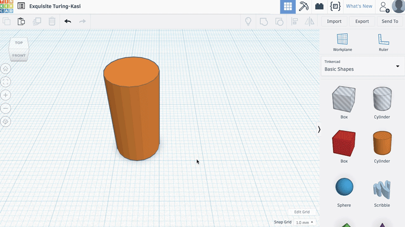
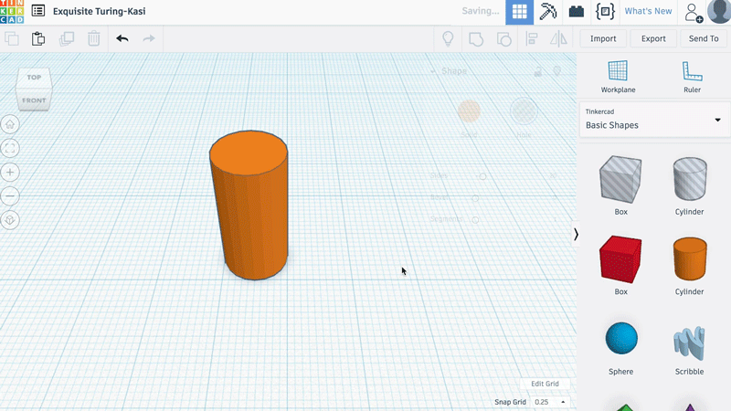
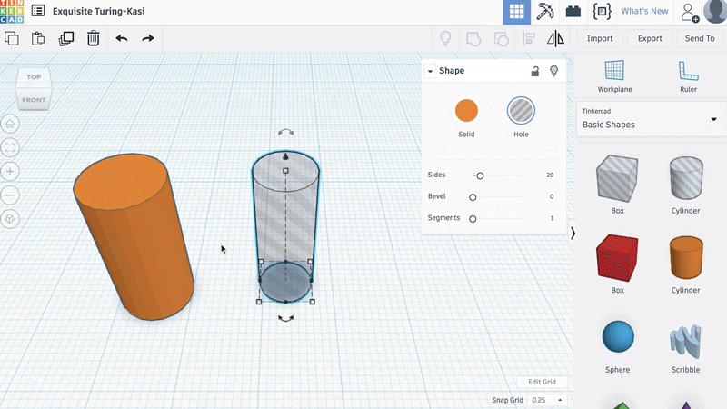
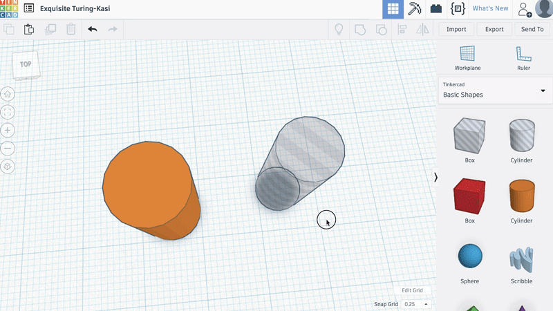
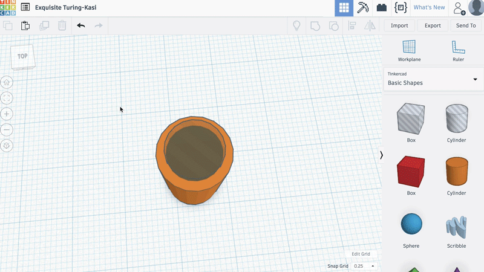

2. Dig the cylinder to create a motor holder
Now change the setting of the grid by clicking on the box located at the bottom right of the window :
Next to "Snap grid 1.0 mm", select 0.25 mm.

Then, select the grey (hollow) cylinder in the right panel.
Also, again using the white squares, it is necessary to change the cylinder diameter to 7.60 mm width and 7.60 mm depth.

Using the black arrow at the top, move the cylinder 2 mm up.

Holding the left mouse button, select both cylinders.
They should both appear with a cyan line.
Press the "Align" button (or the L key).
A selection grid appears on the rectangle at the level of the workplan, click on the circles located in the middle of the segments of the rectangle.
The hollow cylinder is now in the middle of the orange cylinder.

Then select the "Group" icon at the top right (or the Ctrl + G key).

The orange cylinder is now hollow.